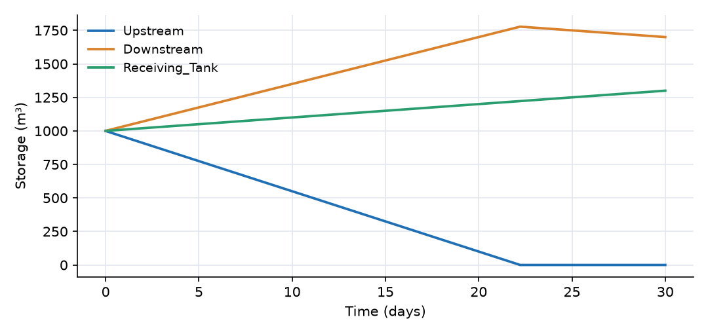
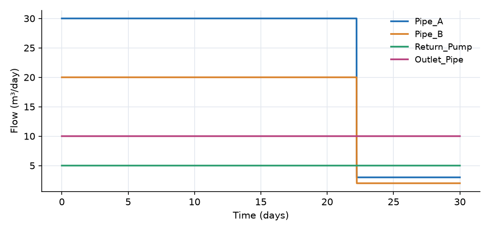

What this model represents
A small network of tanks connected by pipes and a pump, for example the basins of a treatment train, compartments of a storage facility, or any system where water moves between storages along prescribed routes. The point of the example is network topology. Any number of links may join the same two blocks, in either direction, and each block's water balance is simply the sum of all the links attached to it.
How it works
Blocks. All three tanks are Reactor blocks from the mass transfer plugin. A Reactor stores a volume S (m³) and has an optional external inflow (constant or time series), which is zero here. Its balance is
dS/dt = inflow + Σ (flows of links ending at the block) − Σ (flows of links starting at the block)
Links. Each link has a direction, from its from block to its to block, and positive flow follows that direction. All four links are Fixed flow links: their flow is set by the user and does not depend on water levels. Two links (Pipe_A and Pipe_B) connect the same pair of blocks in the same direction, and one (Return_Pump) connects them in the opposite direction. OpenHydroQual treats them as independent connections, so the balances become
dS_Upstream/dt = −Q_A − Q_B + Q_pump = −30 − 20 + 5 = −45 m³/day dS_Downstream/dt = Q_A + Q_B − Q_pump − Q_out = 50 − 5 − 10 = +35 m³/day dS_Receiving/dt = Q_out = +10 m³/day
The three rates sum to zero, so the total volume is conserved.
Outflow limiting. The flow of a Fixed flow link is marked in the plugin as subject to the outflow limit (applylimit). A block cannot hold negative storage. When the outflows of a block would drain it below zero, OpenHydroQual multiplies all of that block's limited outflows by a common factor between 0 and 1, chosen so that storage stays at zero. Because the same factor applies to every outflow, the outflows keep their original proportions.
Time stepping. The run uses a fixed time step of 0.01 days (max_timestep_increase_factor = 1), so the moment at which Upstream runs dry is resolved precisely.
What to look for in the results
- Straight lines. With constant flows, every storage changes linearly: Upstream falls by 45 m³/day, Downstream rises by 35 m³/day and the Receiving_Tank rises by 10 m³/day.
- Upstream runs dry at day 22.2 (1,000 m³ / 45 m³/day). From then on Upstream can only pass on what it receives, which is the 5 m³/day from the Return_Pump.
- Proportional cut-back. After day 22.2, Pipe_A and Pipe_B carry 3 and 2 m³/day: their set values of 30 and 20 m³/day, both multiplied by the same limit factor of 0.1. Water now circulates between Upstream and Downstream at 5 m³/day while Downstream drains to the Receiving_Tank at 10 m³/day.
- Conservation. The sum of the three storages is 3,000 m³ at all times.
Assumptions and limitations
- Fixed flow links impose their flow regardless of water levels, so this model says nothing about how a real network would share flow between parallel pipes. For flows that respond to head differences, use links such as orifices, weirs or pipes from the hydraulic plugins (see the Draining Tank example).
- Tanks are treated as volumes only: they have no geometry or water level, and they never overflow.
- The outflow limit protects against negative storage but redistributes nothing: a block that runs dry simply passes on what it receives.
Model diagram
Hover a block or link to see its name and type. Arrows show the positive flow direction.
Components
Click a component to see every property set in the model file, with units and meaning.
Blocks 3
Storage compartments: each holds water (and dissolved or particulate mass) and has a state that evolves in time.
UpstreamReactor · mass_transferA 1,000 m³ tank (a Reactor block) with no external inflow. It drains into Downstream through two pipes and receives a small return flow.
Reactor: Reactor
| Property | Value | Unit | Meaning |
|---|---|---|---|
| Initial Storage | 1000 | m3 | |
| Bottom elevation | 0 | m | |
| Constant Inflow | 0 | m3/day |
DownstreamReactor · mass_transferA 1,000 m³ tank that receives both pipes, pumps a little water back upstream and discharges to the Receiving_Tank.
Reactor: Reactor
| Property | Value | Unit | Meaning |
|---|---|---|---|
| Initial Storage | 1000 | m3 | |
| Bottom elevation | 0 | m | |
| Constant Inflow | 0 | m3/day |
Receiving_TankReactor · mass_transferA 1,000 m³ tank at the end of the system. It only receives water.
Reactor: Reactor
| Property | Value | Unit | Meaning |
|---|---|---|---|
| Initial Storage | 1000 | m3 | |
| Bottom elevation | 0 | m | |
| Constant Inflow | 0 | m3/day |
Links 4
Connections that move water (and the mass it carries) between blocks.
Pipe_AFixed flow · mass_transferFixed flow of 30 m³/day from Upstream to Downstream.
Fixed flow: Fixed flow
| Property | Value | Unit | Meaning |
|---|---|---|---|
| Flow rate | 30 | m3/day |
Pipe_BFixed flow · mass_transferFixed flow of 20 m³/day from Upstream to Downstream, in parallel with Pipe_A.
Fixed flow: Fixed flow
| Property | Value | Unit | Meaning |
|---|---|---|---|
| Flow rate | 20 | m3/day |
Return_PumpFixed flow · mass_transferFixed flow of 5 m³/day from Downstream back to Upstream, for example a recirculation pump.
Fixed flow: Fixed flow
| Property | Value | Unit | Meaning |
|---|---|---|---|
| Flow rate | 5 | m3/day |
Outlet_PipeFixed flow · mass_transferFixed flow of 10 m³/day from Downstream to the Receiving_Tank.
Fixed flow: Fixed flow
| Property | Value | Unit | Meaning |
|---|---|---|---|
| Flow rate | 10 | m3/day |
Simulation settings
| Start time | 0 |
| End time | 30 |
| Initial time step | 0.01 |
| Write interval (steps) | 10 |
Results
Produced by running the downloaded model unchanged.

